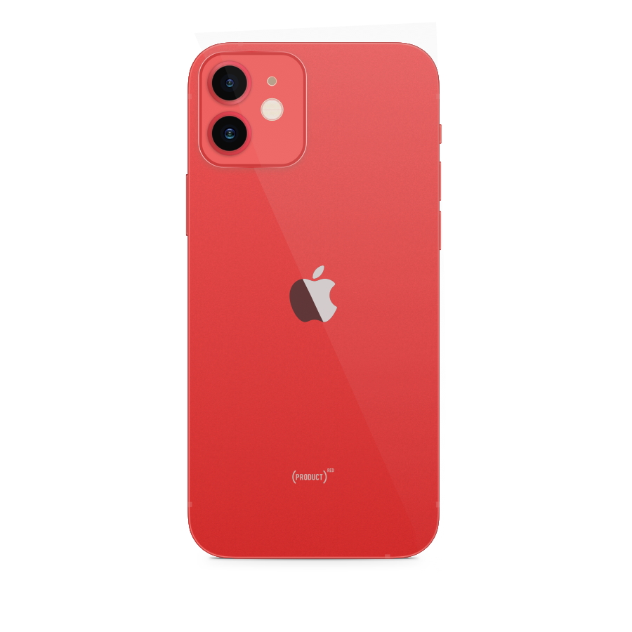

The iPhone 12 mini fills a void in the market, and many people looking for a compact flagship-level phone will be pleased with it. This model could be a suitable upgrade for those holding on to older iPhones because they like the size. You get nearly all the same flagship specifications as with the iPhone 12, with the exception of a smaller battery and slower wireless charging. The display is smaller but just as dense, and quality is excellent. Performance is also great, though this phone does get a bit warm when stressed. The iPhone 12 mini can take brilliant photos in the daytime and at night with both its rear cameras and the front one as well. Night mode is supported across all cameras. Games and movies aren't especially engrossing on the smaller screen but the iPhone 12 mini will do for casual everyday use. iOS 14 is slick and smooth, and you get guaranteed updates for several years.
